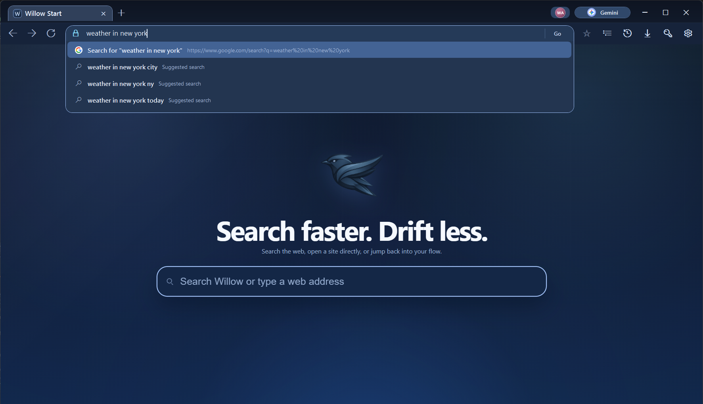
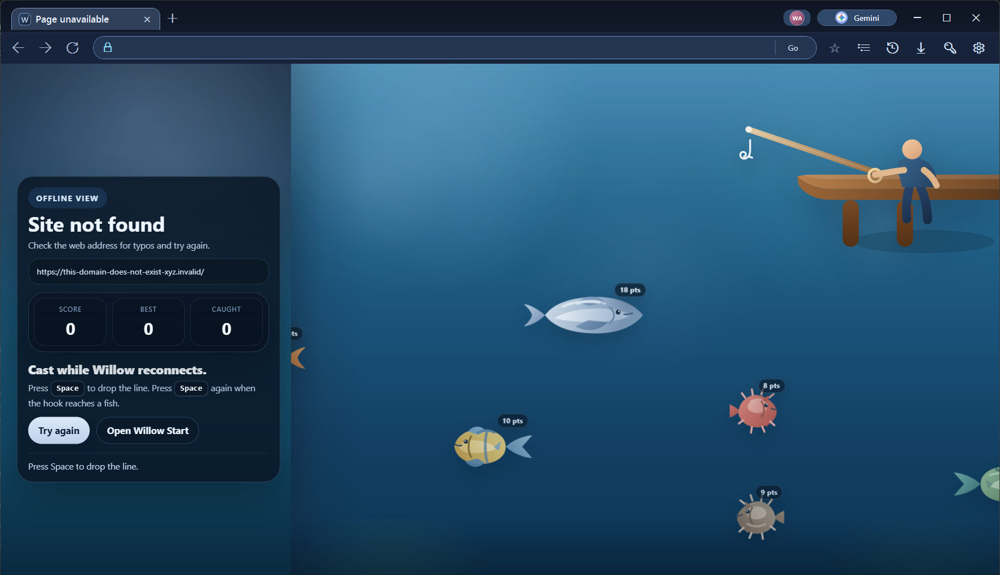

Willow is a Windows-first browser shell with a cleaner start page, lighter navigation, profile separation, and branded fallbacks when the web goes sideways. The goal is simple: make the app feel intentional instead of like a generic wrapper.
Free downloadFresh profile on first launchBuilt-in update promptPinned WebView2 runtime
Why Willow
A focused Windows browser shell that makes everyday actions feel lighter
Jump straight to a site, search without breaking your rhythm, keep separate profiles handy, and recover from dead pages without landing on a boring error screen. Installs, updates, and uninstalling are handled as first-class parts of the experience instead of afterthoughts.
Install Flow
What people should expect after clicking download
The public build is meant to be understandable: one safer ZIP download for the browser, one direct installer if needed, one obvious upgrade path, and one clean way back out if someone removes it.
Install cleanlyThe setup app copies a fresh build into %LocalAppData%\Programs\Willow, writes uninstall metadata, can drop a desktop shortcut, and provisions the exact WebView2 browser runtime Willow expects.Update with contextInstalled copies compare their version to the hosted manifest, prompt before replacing files, and show what changed after the update completes.Uninstall cleanlyWillow registers with Windows uninstall settings and also keeps an explicit Uninstall Willow shortcut in the Start menu.
Highlights
Small details that make the whole window feel better
This is built to feel direct and polished in the places people touch every day, not just to technically open web pages.
Search that stays in flowThe start page makes it easy to type once, search fast, or jump directly to a site without the usual browser clutter.Profiles without the messSet up a fresh profile on first launch and keep your browsing space feeling personal instead of preloaded with someone else's history.Offline pages with personalityEven when a site fails to load, Willow keeps the experience branded and interactive instead of dropping into a dead generic error page.
Screenshots
See Willow in action
These captures come from the current Windows build, so what people download is what they see here.
Search-first homeThe start page keeps search, direct navigation, and your current tabs in one view.

Inline search suggestionsType once and Willow can either jump directly to a site or hand the query off to search without breaking the flow.

Offline fallback gameNo-connection states stay branded and interactive instead of dropping into a generic browser error page.
Updates
Release notes live in the app and on the download page
The website stays simple for the user, but the update story is not vague anymore. The manifest can carry a summary and change bullets, the app surfaces them before updating, and the next launch confirms what changed.
Same browser engine everywhereNew installs no longer depend on whatever WebView2 runtime happens to be on the target PC. Willow can provision and reuse the pinned runtime for this release.Post-update notes are visibleWhen Willow updates, the next launch can tell the user what changed instead of silently replacing files in the background.Uninstall is explicitWindows uninstall registration and a Start menu uninstall shortcut mean removing Willow is as obvious as installing it.